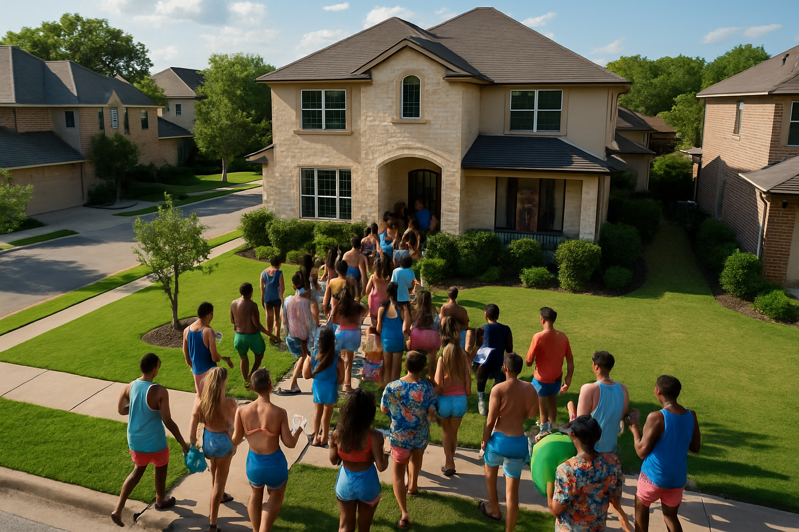

The Problem: Commercial Event Venues in Our Residential Neighborhood
Our quiet residential neighborhood is being disrupted by properties operating as commercial event venues without proper permits or licensing. These operations involve:
Common Violations Include:
- Commercial-scale parties: Large gatherings exceeding residential use
- Professional sound equipment: Exceeding Austin's 75-decibel residential limit
- Corporate events: Business meetings, company parties, team retreats
- Film/photo productions: Professional crews and equipment
- Multiple booking platforms: Operating across various rental websites
- Parking and traffic issues: Overwhelming residential street capacity
- Safety concerns: Large numbers of unfamiliar visitors
Impact on Our Neighborhood
Commercial event venues operating in residential areas create significant problems that affect every aspect of our community:
Traffic and Infrastructure Impact
Residential streets and infrastructure weren't designed for commercial-level traffic. Events with 40-70 guests can generate 80-140 vehicle trips in a single day, creating:
- Parking shortages: Guests overflow onto neighboring properties and block driveways
- Road wear: Heavy traffic damages residential street surfaces not built for commercial use
- Emergency access: Crowded streets can impede emergency vehicle response
- Pedestrian safety: Increased traffic endangers children and families in our walking-friendly neighborhood
Safety and Security Concerns
Regular streams of strangers attending commercial events create ongoing security risks:
- Unknown visitors: Dozens of unfamiliar people regularly entering the neighborhood
- Alcohol-related incidents: Party venues often involve drinking, increasing risk of disturbances
- Property security: Constant flow of visitors makes it difficult to identify suspicious activity
- Children's safety: Parents can't distinguish between neighbors and commercial event guests
Property Values and Marketability
Commercial operations in residential areas directly impact property values and sales prospects:
- Disclosure requirements: Texas law requires sellers to disclose nearby commercial operations
- Buyer deterrence: Few families want to live next to a commercial event venue
- Financing complications: Lenders may be hesitant to finance homes near undisclosed commercial operations
- Market stigma: Properties near commercial venues often sell for less and take longer to sell
Your Rights as a Resident
Austin Noise Ordinance Rights
Austin Code of Ordinances Title 9, Chapter 9-2 protects residential areas:
Note: 75 decibels is roughly equivalent to highway traffic noise - not very loud. Professional DJ equipment at parties clearly exceeds this limit.
Deed Restriction Rights
Northwest Hills of Lakeview Section III deed restrictions specifically prohibit:
Section II.H: "No noxious or offensive activities shall be carried on or upon any Lot, nor shall anything be done thereon which may be or may become an annoyance to the neighborhood."
Section II.J: "No merchandising, advertising and sales programming shall be conducted on any Lot without the prior approval of the Developer."
Zoning Rights
Residential properties cannot legally operate as commercial event venues under Austin zoning laws. Commercial activities require:
- Proper commercial zoning designation
- Business licenses and permits
- Commercial property tax rates
- Hotel occupancy tax collection
Legal Violations
City Code Violations
- Zoning Violation: Commercial use in residential zone
- Noise Ordinance: Exceeding 75-decibel limit
- Business Licensing: Operating without proper permits
- STR Licensing: Short-term rental without city license
- Tax Evasion: Not collecting/paying hotel occupancy taxes
Deed Restriction Violations
- Non-residential use: Commercial venue operation
- Neighborhood nuisance: Ongoing disturbance to residents
- Commercial advertising: Marketing without developer approval
Property Impact
Texas Property Disclosure Laws
Texas Property Code and real estate regulations create specific disclosure requirements that protect buyers and affect property marketability:
Additionally, the Texas Real Estate Commission (TREC) Seller's Disclosure Notice specifically requires disclosure of:
- Neighborhood noise sources: Including commercial operations that generate regular noise
- Property use changes: Any knowledge of nearby properties being used for non-residential purposes
- Nuisance conditions: Ongoing activities that materially affect property use and enjoyment
Real Estate Professional Obligations
Under TREC's professional standards, real estate agents have a duty to disclose known material facts, including:
- Commercial operations in residential neighborhoods
- Ongoing noise, traffic, or safety issues from neighboring properties
- Any conditions that would affect a buyer's decision to purchase
Recognizing Commercial Operations
Commercial event venues operating in residential areas often share similar characteristics:
Professional Equipment: Commercial-grade sound systems that exceed residential noise limits

Commercial Service: Professional event setups indicating business operations
Scale Concerns: Large groups that disrupt residential neighborhood peace
Traffic Impact: Parking and traffic that overwhelms residential infrastructure
How to Investigate
If you suspect a neighbor is operating a commercial venue, you can research their activities:
- Check rental platforms: Search Peerspace, Swimply, Giggster, and Eventup for local listings
- Look for business marketing: Professional social media accounts or websites
- Document patterns: Regular large gatherings, commercial equipment, professional services
- Review customer feedback: Online reviews often reveal the commercial nature and scale of operations
Frequently Asked Questions
- Why are these 'event venues' a commercial operation and not a short-term rental?
- Don't homeowners have a right to run a home business?
- How are deed restrictions enforced?
- I'm being told by Austin police that noise ordinance laws don't apply until 10pm. What's happening?
- Why do I need to disclose living next to an event venue when selling my home?
- The owners of these event venues are just trying to make a living.
- What if the venue owner claims they're just having "friends" over?
- Can I remain anonymous when reporting violations?
- What if I'm worried about being labeled a "NIMBY" or "Karen"?
- What happens if the city won't enforce the laws?
1. Why are these 'event venues' a commercial operation and not a short-term rental?
Understanding this distinction is crucial for enforcement and legal action:
Short-Term Rental Legal Definition
Short-term rentals are legally defined as "properties typically rented for less than 30 days" for the primary purpose of temporary lodging. Key characteristics include:
- Sleeping accommodations: Guests rent dwelling space to sleep and lodge temporarily
- Residential use: The property functions as a temporary residence for visitors
- Limited occupancy: Typically designed for family-sized groups seeking lodging
- Overnight stays: The rental period assumes guests will sleep on the premises
Assembly/Event Venue Legal Definition
Event venues fall under "Assembly Occupancy" as defined by the International Building Code and International Fire Code:
Key characteristics that distinguish event venues as commercial assembly operations:
- Gathering purpose: "Gatherings of 50 persons or more for civic, social, or religious functions"
- Social functions: Events focused on entertainment, celebration, or business purposes
- Food/drink consumption: Parties involving catering, bars, or social dining
- Commercial-scale occupancy: Events regularly exceeding residential capacity limits
- Assembly safety requirements: Properties with 50+ occupants trigger assembly occupancy safety regulations
Critical Legal Distinction: The "Single Party" Rule
Even if someone tries to claim their event venue qualifies as a short-term rental, Austin's STR regulations themselves prohibit party venue operations:
This provision creates a clear legal barrier between legitimate STRs and event venues:
- "Single party" defined: A cohesive group traveling together (family, friends, colleagues on a trip)
- Event venues violate this: Parties and events inherently involve multiple distinct parties—the host, various guest groups who arrive separately, vendors, and attendees who don't know each other
- Wedding example: A wedding reception involves the bride's family, groom's family, friends from work, college friends, neighbors—clearly multiple parties, not a single party
- Corporate event example: Company parties bring together employees from different departments who constitute multiple parties, not a single cohesive group
2. Don't homeowners have a right to run a home business?
While Texas law generally supports property rights, homeowners in residential areas have significant legal limitations on commercial activities:
Zoning Restrictions
Austin's zoning ordinances strictly regulate home businesses in residential areas. Event venues are explicitly prohibited because they:
- Generate commercial-level traffic incompatible with residential streets
- Create noise and disturbances beyond what's allowed in residential zones
- Require assembly occupancy permits and safety measures not available in residential properties
- Violate the fundamental purpose of residential zoning—to preserve quiet enjoyment for families
Deed Restrictions Override Property Rights
When homeowners purchase property with deed restrictions, they voluntarily agree to limitations. Northwest Hills deed restrictions explicitly state:
These are legally binding contracts that courts consistently enforce, even against claims of property rights.
Permitted Home Businesses vs. Event Venues
Austin does allow certain home-based businesses that:
- Don't generate customer traffic (online businesses, consulting)
- Don't create noise or disturbances
- Don't employ non-resident staff on-site
- Don't change the residential character of the property
Event venues violate all of these conditions, making them illegal home businesses.
3. How are deed restrictions enforced?
Deed restrictions are private legal agreements that run with the land and bind all property owners in the subdivision. Here's how enforcement works:
Who Can Enforce
- Any property owner in the subdivision has legal standing to enforce deed restrictions
- Homeowners associations often take the lead but aren't required
- Groups of neighbors can join together to share legal costs
Enforcement Process
- Documentation: Gather evidence of violations (photos, videos, advertisements, witness statements)
- Demand letter: Attorney sends formal notice demanding compliance
- Negotiation: Often violations stop after receiving legal notice
- Legal action: File lawsuit in district court if violations continue
- Court order: Judge issues injunction stopping the commercial use
Financial Considerations
Courts in Texas regularly enforce deed restrictions and have the power to:
- Issue permanent injunctions stopping commercial activities
- Award monetary damages for lost property value
- Require violators to pay attorney fees and court costs
- Hold violators in contempt for ignoring court orders
4. I'm being told by Austin police that noise ordinance laws don't apply until 10pm. What's happening?
This is a serious and widespread problem caused by incorrect training and misinformation within APD. Here's what you need to know:
The Actual Law
Austin City Code Title 9, Chapter 9-2 clearly states:
During nighttime (10pm-7am): No audible sound from sound equipment beyond property line
The Misinformation Problem
Many APD officers incorrectly believe:
- ❌ "There's no noise limit until 10pm" - FALSE
- ❌ "People can make any amount of noise during the day" - FALSE
- ❌ "75 decibels only applies at night" - FALSE
What You Can Do
- Know the ordinance number: Title 9, Chapter 9-2, Section 9-2-5
- Request a supervisor: If an officer gives incorrect information
- Document everything: Record interactions and get badge numbers
- Contact APD District Representative: Report training issues to Officer Andrew Kabbah
- File formal complaints: Use APD's complaint system for persistent problems
- Contact City Council: Report systemic enforcement failures
5. Why do I need to disclose living next to an event venue when selling my home?
Texas law requires sellers to disclose material facts that could affect a buyer's decision to purchase or the price they're willing to pay:
Legal Requirements
The Texas Real Estate Commission Seller's Disclosure Notice specifically requires disclosure of:
- Nuisances: Ongoing noise, odors, or other disturbances
- Neighborhood conditions: Activities that affect peaceful enjoyment
- Material facts: Any condition that would influence a buyer's decision
Why Event Venues Must Be Disclosed
Living next to a commercial event venue is a material fact because it:
- Creates regular noise disturbances affecting quality of life
- Generates commercial-level traffic and parking problems
- Introduces safety and security concerns from constant strangers
- May violate deed restrictions, creating potential legal issues
- Significantly affects property values and marketability
Consequences of Non-Disclosure
Failing to disclose can result in:
- Lawsuit for fraud: Buyers can sue for damages and attorney fees
- Sale cancellation: Buyers may void the contract
- Monetary damages: Courts can award the difference in property value
- TREC violations: Real estate agents can lose their licenses
6. The owners of these event venues are just trying to make a living.
While we understand economic pressures, this argument doesn't justify violating laws and destroying neighborhood quality of life:
Legal Business Options Exist
Property owners who want to run event venues have legal options:
- Purchase property in commercially zoned areas
- Apply for proper zoning changes and permits
- Operate legitimate, licensed businesses that pay taxes
- Rent their homes as actual STRs (for lodging, not events)
The Real Costs to Neighbors
Illegal event venues impose significant costs on everyone else:
- Property values: Neighbors lose tens of thousands in home equity
- Quality of life: Families can't enjoy their own homes and yards
- Safety: Children are exposed to risks from constant strangers
- Infrastructure: Residents pay for road damage from commercial traffic
- Tax fairness: Event venues avoid commercial property taxes and hotel taxes
This Is About Fairness
When someone buys property in a residential neighborhood with deed restrictions, they agree to the rules. Breaking those rules to make money while destroying neighbors' property values and peace isn't entrepreneurship—it's exploitation.
7. What if the venue owner claims they're just having "friends" over?
This is a common deflection tactic, but the evidence clearly distinguishes commercial operations from personal gatherings:
Commercial Operations Leave Clear Evidence
- Online listings: Properties advertised on Peerspace, Swimply, etc.
- Customer reviews: Dozens or hundreds of reviews from paying customers
- Business marketing: Instagram business accounts, websites, promotional materials
- Payment processing: Regular commercial transactions through platforms
- Pattern of strangers: Different groups every week who don't know the owners
Legal Standards
Courts look at the "totality of circumstances" including:
- Frequency of events (weekly vs. occasional)
- Commercial equipment (professional sound systems, event furniture)
- Money changing hands (rental fees, deposits)
- Advertising and marketing efforts
- Scale exceeding normal residential use
When properties have 131+ customer reviews and regular 40-70 person events, the "just friends" defense doesn't hold up in court.
8. Can I remain anonymous when reporting violations?
Yes, there are several ways to report violations while protecting your identity:
Anonymous Reporting Options
- 311 App: Can be used anonymously for code violations
- NWACA: Can coordinate community response without revealing individuals
- Multiple neighbors: Group complaints protect individual identity
- City enforcement: Let government agencies be the enforcer, not you personally
Why Anonymity Matters
Protecting your identity helps avoid:
- Retaliation or harassment from venue operators
- Uncomfortable neighbor relationships
- Being targeted on social media or review sites
- Potential property damage or vandalism
9. What if I'm worried about being labeled a "NIMBY" or "Karen"?
Standing up for your legal rights and quality of life doesn't make you unreasonable. Here's perspective on this concern:
You're Protecting Legal Rights
You're not opposing legitimate development or legal businesses. You're enforcing:
- Existing zoning laws designed to protect residential areas
- Deed restrictions everyone agreed to when buying property
- Noise ordinances that ensure peaceful enjoyment
- Tax laws requiring businesses to pay their fair share
The Real Issue
This isn't about stopping progress or being anti-business. It's about:
- Appropriate location: Commercial businesses belong in commercial zones
- Following rules: Everyone else manages to follow zoning laws
- Protecting families: Children deserve safe, quiet neighborhoods
- Preserving investment: Your home is likely your largest asset
Response to Name-Calling
If someone tries to dismiss your concerns with labels, remember:
- They're deflecting from their illegal activities
- Name-calling doesn't change the law
- You have broad community support
- Courts consistently uphold residential protections
10. What happens if the city won't enforce the laws?
You have multiple escalation paths if initial enforcement efforts fail:
Political Pressure
- City Council: Attend meetings, organize neighbors to speak
- Media attention: Local news often covers neighborhood quality issues
- Election accountability: Support candidates who enforce residential protections
Legal Action
- Deed restriction lawsuit: Private enforcement with attorney fee recovery
- Nuisance claims: Sue for damages and injunctive relief
- Mandamus action: Force city to enforce its own ordinances
Community Organization
- NWACA involvement: Leverage neighborhood association resources
- Petition drives: Demonstrate widespread community opposition
- Documentation campaign: Build overwhelming evidence file
Who To Contact
Multiple enforcement channels are available. Choose the approach that works best for your situation:
NWACA (Northwest Austin Civic Association)
Website: nwaca.org
Purpose: Community advocacy, deed restriction enforcement guidance
Austin City Code Compliance
311: Call 3-1-1 or use Austin 311 app
Purpose: Report commercial use in residential zone
Officer Andrew Kabbah
Email: andrew.kabbah@austintexas.gov
Purpose: Noise ordinance enforcement, community policing
District 10 City Council Member Marc Duchen
Purpose: Policy advocacy, city enforcement coordination
Mayor Pro Tem Vanessa Fuentes
Purpose: STR enforcement reforms, revenue collection, policy advocacy
STR Licensing Supervisor Eric Gardner
Purpose: Report unlicensed STR operations
Take Action
Immediate Steps You Can Take
1. File Official Complaints
- Noise violations: Call 311 or APD District Representative
- Zoning violations: Call Code Compliance at 512-974-9144
- STR violations: Email STRLicensing@austintexas.gov
2. Contact Your Representatives
- Local advocacy: Email NWACA info@nwaca.org
- City policy: Contact District 10 and Mayor Pro Tem offices
- Enforcement: Work with APD District Representative
3. Know Your Legal Options
- Deed restrictions: Private enforcement rights with attorney fee recovery
- Property rights: Protection from commercial intrusion
- Nuisance law: Ongoing disturbance remedies
Sample Communication
When contacting officials, include:
- Property address of violation
- Specific law or ordinance being violated
- Documentation of commercial activity
- Impact on your property and neighborhood
- Request for specific enforcement action
Sample Email to City Council Member Marc Duchen
Dear Council Member Duchen,
I am writing as your constituent in Northwest Hills to request immediate city enforcement action against an illegal commercial event venue operating at [PROPERTY ADDRESS]. This residential property is brazenly violating multiple city ordinances while destroying the quiet, family-friendly character of our neighborhood.
The violations are clear and documented:
• Commercial zoning violation - operating event venue in residential zone
• Noise ordinance violations - professional DJ equipment exceeding 75dB limit
• Operating without business licenses or special event permits
• Deed restriction violations prohibiting commercial use
This property regularly hosts 40-70 person commercial parties, generating 80-140 vehicle trips that overwhelm our residential streets. My family cannot enjoy our backyard due to constant noise, and we fear for our children's safety with dozens of strangers regularly flooding our neighborhood.
I am requesting immediate action:
1. Code Compliance investigation and citation for zoning violations
2. Coordination with STR enforcement to shut down unlicensed operations
3. Enforcement of noise ordinances with appropriate penalties
We chose Northwest Hills for its residential character, and we deserve to have our city's laws enforced. Commercial event venues belong in commercial districts, not residential neighborhoods. I look forward to your prompt response and action on this matter.
Respectfully,
[YOUR NAME]
[YOUR ADDRESS]
[YOUR PHONE NUMBER]
Contact Us
We are fellow neighbors working to protect the residential character of Northwest Hills. If you have questions, need assistance, or want to share your experiences:
Together we can maintain Northwest Hills as the quiet, family-friendly neighborhood we chose to call home.